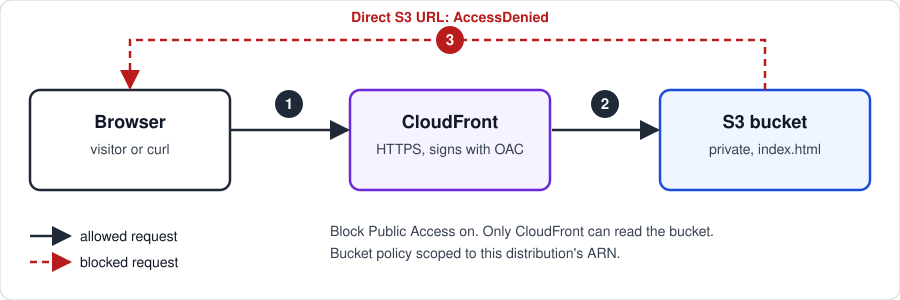

Project documentation
Static Site on S3 + CloudFront
A static website in a private S3 bucket, served worldwide over HTTPS through CloudFront. The bucket is not public: only the CloudFront distribution can read from it.
Overview
Public websites often end up with buckets that are open to the internet. This design keeps the bucket private and puts CloudFront in front of it:
- Private bucket. Block Public Access is on for all four settings, and versioning is enabled.
- Origin Access Control (OAC). CloudFront signs each request to S3, so the bucket doesn't have to be public.
- Scoped bucket policy. The policy allows only
s3:GetObject, only for the CloudFront service, and only for this one distribution. - HTTPS. Plain HTTP requests are redirected to HTTPS.
Architecture
A visitor's request goes to CloudFront, which fetches the file from S3 with a signed request. A direct request to the S3 URL is denied.

Build steps
- Create a private bucket in us-east-1. Keep Block Public Access on, and enable versioning.
- Upload
index.htmlto the bucket root. - Create a CloudFront distribution with the S3 REST endpoint as the origin (not the website endpoint). Attach a new Origin Access Control, redirect HTTP to HTTPS, and set the default root object to
index.html. - Apply the bucket policy that CloudFront generates. It scopes access to this distribution's ARN.
Setting the default root object matters. Without it, a request for / asks S3 for an empty key, which returns AccessDenied instead of a page.
Verification
| Request | Expected | Result |
|---|---|---|
CloudFront URL, / | 200, page renders | Page renders |
| Direct S3 object URL | AccessDenied | AccessDenied |
Issues I hit
| Symptom | Cause | Fix |
|---|---|---|
CloudFront returned AccessDenied even though the policy and OAC were correct | The distribution's default root object was blank, so / requested an empty key. The policy grants only s3:GetObject, so S3 denied a key that doesn't exist. | Set the default root object to index.html. |
What's next
- Add a custom domain with ACM and Route 53.
- Put the bucket and distribution in infrastructure as code so the setup is reproducible.
- Add CloudFront logs or a CloudWatch alarm on 4xx and 5xx rates.
Cleanup
Disable and delete the CloudFront distribution, empty the bucket including all versions, delete the bucket, then delete the Origin Access Control. This project has been torn down.